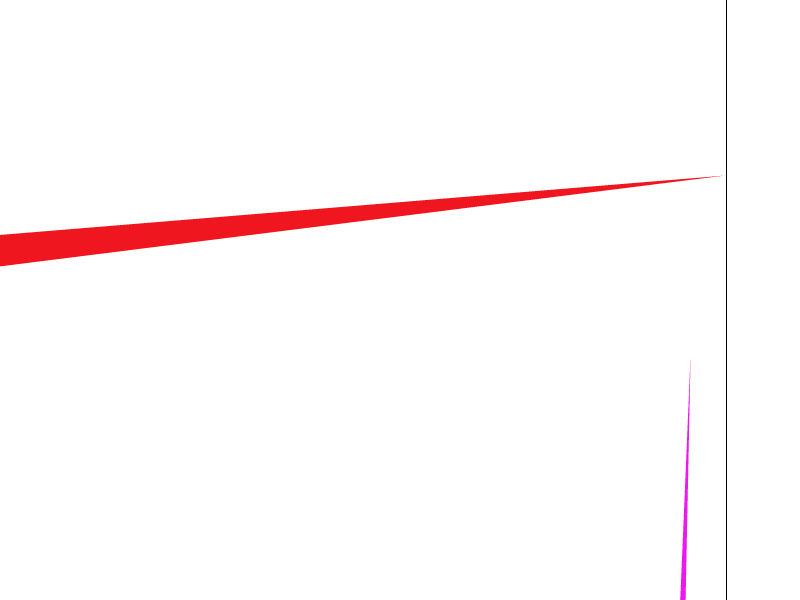
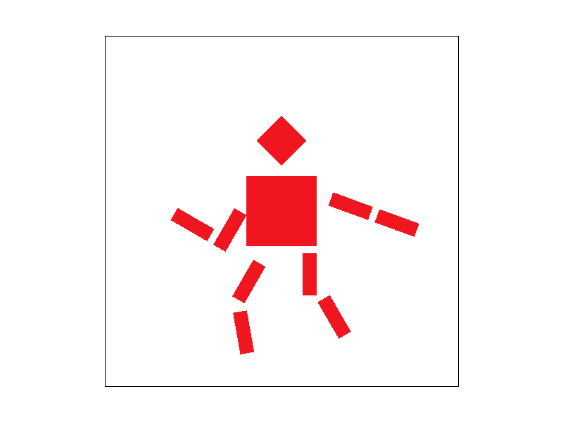
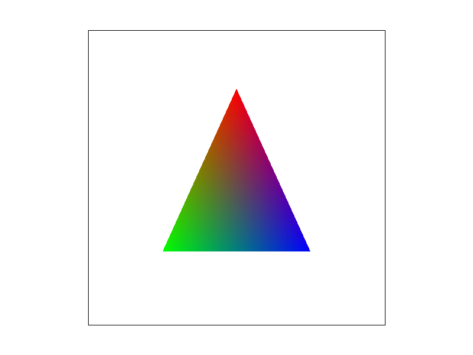
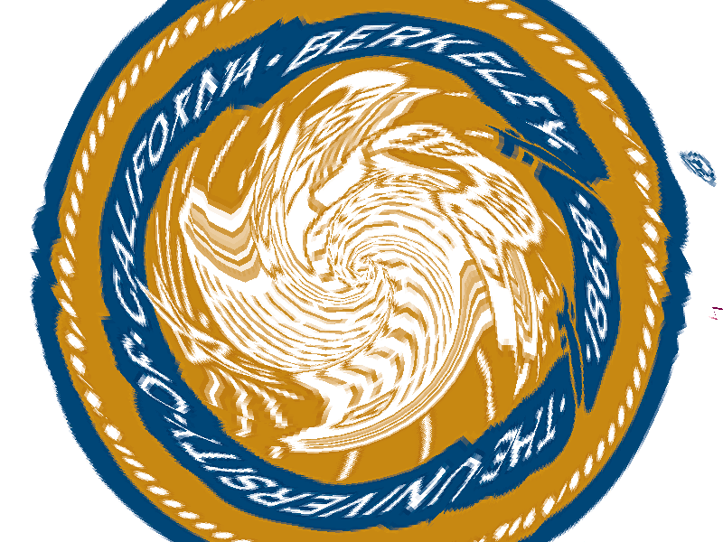
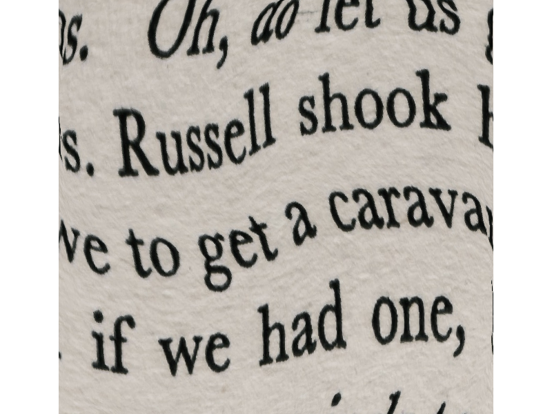
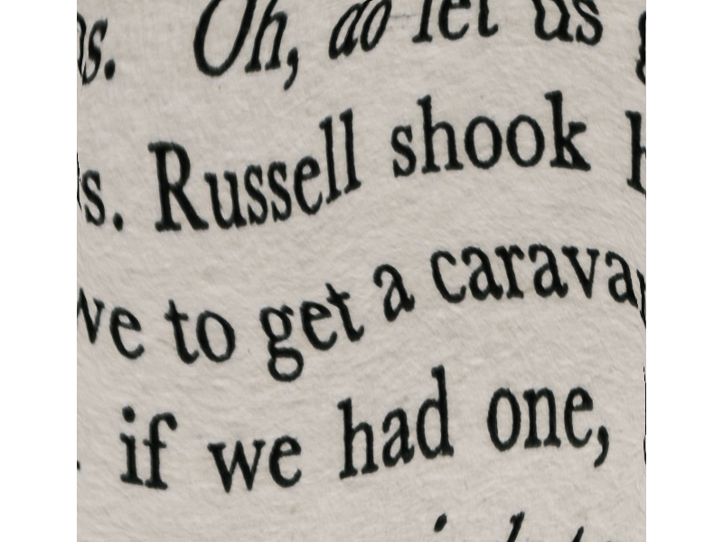
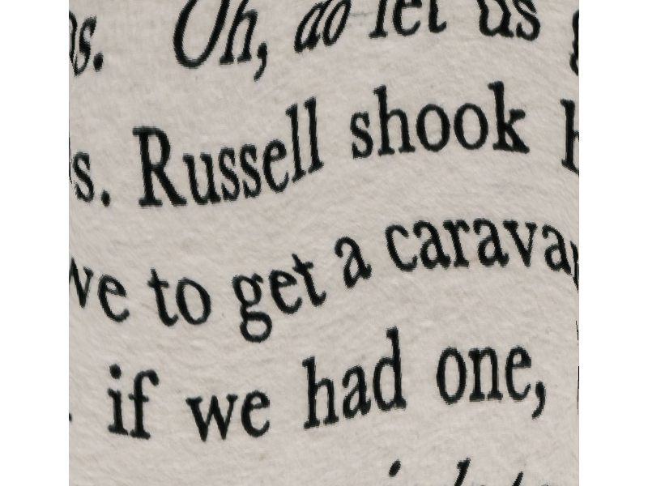

Overview
This project is a rasterizer for reading and printing a svg file on screen. Specifically, it supports sasterizing points, lines and triangles, with supersampling and mipmap as anti-aliasing methods of sampling color or texture.
Section I: Rasterization
Part 1: Rasterizing single-color triangles
In this task, given the three points of a triangle and its color, I first calculated the bounding box of the triangle: for x-axis, the lowerbound is the minimum of the three x-coordinates, and the upperbound is the maximum of them puls 1. This ensures no pixel is omitted. Then an intersection of the bounding box and the screen box is calculated to eliminates the pixels that does not need drawing.
Then I make the three points follow a counter-clockwise order. Then I enumerate each pixel in the bounding box, and check if it is inside the triangle through cross. If each edge is counter-clockwise, then a point inside should lie on the left of each of the edges.
In the end, for each pixel inside the triangle, it is filled with the color given.
Fig1 shows the result on picture svg/basic/test4.svg. One can see that there are obvious jaggies on the edges.
|
|
|
|
|

|
Part 2: Antialiasing triangles
Let s be the square root of the sample rate. In this task, the pixel coordinates is extended to s times as before in both axis. The sample result is saved in sample_buffer and average-downsampled and converted to rgb_framebuffer_target.
A problem is about points and lines because they are sampled in the original resolution. To solve this, I modified fill_pixel and create fill_subpixel function. These two function do similar jobs but on different ranges. My modified fill_pixel actually fills s*s pixels correspond to a pixel in the resulting image, while fill_subpixel fills only one.
Supersampling is useful for anti-aliasing because this solves the problem that each pixel is exactly the color in the original picture. Supersampling enables buffer colors: a pixel on an edge is mixed from triangle and background.
Fig 1-4 show the results of different sample rate on the same picture. We can see that as the sample rate goes up, the edges become more smooth and jaggies disappear.
Part 3: Transforms
Fig 5. shows the result of this task without any modification in the pose. Fig 6 shows a modified version where a person is running.

|

|
Section II: Sampling
Part 4: Barycentric coordinates
Barycentric coordinates can be considered as the "relative position" of a point in a triangle. If we stretch a triangle, we can still recover a point using its bartcentric coordinates. This is why we use this form in texture mapping: a texture triangle may change its shape to fit its mesh triangle. Also this allows us to interpolate some value of points, like color.
Fig 7 below illustrates this concept by giving the three point of a triangle different colors: red, green and blue. The color inside is interpolated by the colors of the three nodes. It changes smoothly.
|

|
Fig8. shows the result of this task. The color is continuous and change smoothly.

|
Part 5: "Pixel sampling" for texture mapping
Pixel sampling is to find the texel(or nearby texels) on texture corresponding to a pixel. For a pixel inside the triangle, I first calculate its barycentric coordinate and use this barycentric coordinate to recover its uv-coordinate on texture. Nearest pixel sampling is to find the nearest texel of the mapped point uv-coordinate and just use its color. Bilinear pixel sampling is to interpolate the color combining the 4 texels around the uv-coordinate.
Fig 9-12 below show the results of different pixel sampling methods and different sample rates on the same picture. No matter what sample rate, bilinear pixel sampling is more smooth than nearest, especially on the edges. The reason is similar to super-sampling: bilinear mixes up 4 texels to produce buffer colors instead of just using one texel color. Sample rate matters very little. I think this is because the texture has a frequency low enough, comparable to Nyquist frequency.
|

|
|
|
|
|
Part 6: "Level sampling" with mipmaps for texture mapping
We know that decreasing the frequency of original image helps anti-aliasing, but how much should we decrease? We use different levels of mipmaps as different levels of bluring(or decreasing frequency). We use a formula to decide which level to use, depending on how much texels correspond to a pixel(the derivatives). After we have a desired level in float, we have two choices: use the nearest level, or interpolate on the nearest two levels.
The following Fig 13-16 show the results under different level sampling methods and different pixel sampling methods. We can see that in some area, nearest level sampling gives a more natral picture. In most area, bilinear pixel sampling is more natral than nearest one.
|

|

|
|

|
|
Section III: Art Competition
If you are not participating in the optional art competition, don't worry about this section!